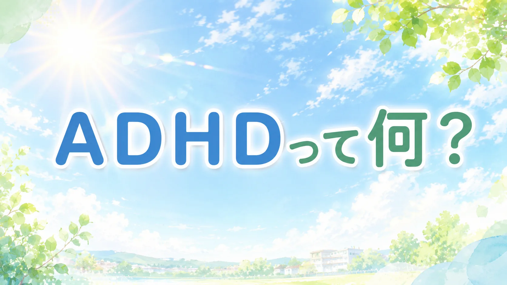

📖 知っておくと読みやすくなる言葉
- ADHD（エーディーエイチディー）
- → 注意欠如・多動症。集中が続きにくい・じっとしていられないなどの特性を持つ、脳の発達に関わる状態
- 特性（とくせい）
- → 生まれつきの脳の働き方の傾向。「個性」と呼ばれることもある
- 実行機能（じっこうきのう）
- → 計画を立てる・優先順位を決める・衝動を抑えるなど、行動をコントロールする脳の働き
- ワーキングメモリ
- → 情報を一時的に頭の中に置いておく力。「脳のメモ帳」とも呼ばれる
- 療育（りょういく）
- → 子どもの発達を助けるための専門的なサポート。医療・福祉・教育がチームになって行う
「また忘れ物をして」「なんで座ってられないの」「ちゃんとやる気を出してよ」――ADHDのある子は、こんな言葉を何度も受け取りながら育ちます。でも、それはやる気や根性の問題ではありません。脳の仕組みの違いが原因です。
ADHDって何？
ADHD（Attention-Deficit/Hyperactivity Disorder）は、日本語で「注意欠如・多動症」といいます。診断基準では「神経発達症群」に分類されることがあり、注意の向け方、衝動の抑え方、活動量の調整などに困難が出やすい特性です。医学的な診断は、医師が発達歴や生活上の困りごとを総合して判断します。
学齢期の子どもの中にも一定数みられる特性で、男児に多く診断される傾向があるとされています。ただし、女児や不注意が中心のタイプは困りごとが見えにくく、本人の努力不足として誤解されることがあります。割合の数字だけで判断せず、生活や学習で何に困っているかを見ることが大切です。
3つのタイプがある
| タイプ | 主な特徴 |
|---|---|
| 不注意優勢型 | 集中が続かない・忘れ物が多い・物をよく失くす・ぼーっとしている |
| 多動衝動優勢型 | じっとしていられない・しゃべりすぎる・順番を待てない・衝動的に動く |
| 混合型 | 不注意と多動衝動の両方が顕著（最も多いタイプ） |
なぜそうなるの？ ── 脳の仕組みから見る
ADHDは「意志が弱い」からではありません。脳の特定の部分の働き方が違うことが関係しています。
前頭前野の機能
前頭前野は「脳の司令塔」とも呼ばれる部分で、計画を立てる・優先順位を決める・衝動を抑える・記憶を一時的に保持する（ワーキングメモリ）などの「実行機能」を担っています。ADHDでは、この前頭前野の働きが弱くなっていると考えられています。
ドーパミン・ノルアドレナリン系
神経伝達物質の「ドーパミン」と「ノルアドレナリン」は、前頭前野に情報を届ける役割を持っています。ADHDでは、これらの物質の分泌量や受け取り方に違いがある場合があり、前頭前野への信号が弱くなりやすいと考えられています。
ADHDの脳は、「やらなければいけない」という信号が脳の司令塔にうまく届きにくい状態です。これは意志の問題ではなく、神経回路の特性です。
報酬への反応の違い
ADHDの脳は「すぐにもらえるご褒美」には強く反応しますが、「将来のご褒美」への動機づけが弱い傾向があります。「あとでテストがある」「将来のために」という言葉では動きにくい。でも「今・すぐ・面白い」ことには驚くほど集中できます。これが「ゲームならずっとできるのに勉強はできない」という現象につながります。
「しつけが悪い」ではない
ADHDの発症には遺伝的な要因が強く関わっており、育て方や家庭環境だけが原因ではありません。親がADHDの場合、子どもがADHDである確率は統計的に高くなることが知られています。ただし、環境がまったく関係ないわけでもなく、遺伝と環境の両方が影響し合っています。
「もっと厳しくしつければよかった」「私の育て方が悪かった」と自分を責める保護者の方がいますが、それは間違いです。ADHDの子は「やりたくない」のではなく、脳の特性として「やろうとしても難しい」状態にあります。
強みになる側面もある
ADHDの特性は困難を生む一方で、強みになることもあります。
- 興味のあることへの圧倒的な集中力（過集中）
- 豊かな発想力・創造性
- 行動力・スピード感
- 状況の変化に素早く反応する柔軟さ
適切な支援と環境の工夫があれば、この特性を活かして活躍する人はたくさんいます。
支援のポイント
- 環境を整える：気が散るものを減らす、見える場所にスケジュールを貼る
- ほめて伸ばす：できたことをすぐに認める（即時フィードバック）
- 小さく分ける：長い課題を短いステップに分割する
- 専門家に相談する：小児科・児童精神科・発達障害支援センターへ
- 学校へサポートを申し込む：合理的配慮の申請方法はこちら
- 放課後の居場所を探す：放課後等デイサービスの使い方はこちら
正式な診断がなくても、困難を抱えているお子さんには支援が届くべきです。「グレーゾーン」と呼ばれる状態でも、学校・療育・相談窓口に相談することができます。診断は支援を受けるための唯一の条件ではありません。
📌 この記事を使うヒント
「また忘れた」「集中できない」を怠けと誤解されているとき、この記事をパートナーや学校の先生に渡して「特性として理解してほしい」という気持ちを伝える材料にしてください。
まなびの森教育研究所では、家庭でできる発達支援の実践ツールを提供しています。
スケジュール表・ほめ記録シートなど、ADHDのある子の日常支援に役立ちます。
ダウンロードしてすぐ使えるPDF形式です。